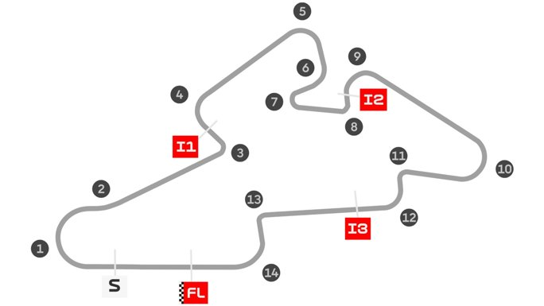

Circuito: Automotodrom-Brno
Localidad: Brno (República Checa)
Vueltas: 21
Longitud del circuito: 5403 metros
Anchura media: 15 metros
Hora en España: 15:00:00
Patrocinador: Tissot
Ganador: M. Marquez (40:04.628)
Clasificación Mundial
- Marc Márquez
- Álex Márquez
- Pecco Bagnaia
Referencias
- https://www.motogpbrno.com/es
- https://www.automotodrombrno.cz/en/moto-gp/
- https://en.wikipedia.org/wiki/Brno_Circuit
Galería
